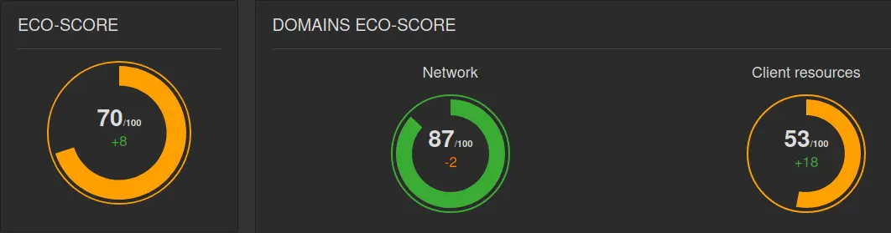

In May 2024, on the Designers Ethiques Slack, Julien-Antoine Boyaval of web agency Konfiture shares a site created for Leroy Merlin. This site (which contains a single page) is presented as ecodesigned: https://lesdesignersdedemain.com/
At first glance (via web browser tools), the site does indeed appear rather light. However, certain elements catch my eye. More on that later.
As usual, I’m launching a benchmark with Greenspector Studio to take things a step further.
Analyze site overconsumptions
The measurements were carried out on a Samsung Galaxy S9 phone, in WIFI (3 iterations).
After measurements, the results confirm the initial suspicions:
- EcoScore: 59/100 (Network: 82, Client: 35)
- Data transferred: 292 kB
- Total battery discharge: 5.28 mAh
- CPU process (1.11%)
Data transfers are indeed low and, as a result, the score on the Network side is very good.

On the other hand, the Client-side score is low, which correlates with high battery discharge and high CPU impact (especially for such a light, static page). Generally speaking, this can be due to third-party services, animations or even calculations (mainly JS) performed in a loop.
Let’s start by looking at what happens when the user is inactive, via Greenspector Studio :

We noticed 3 data peaks that are probably directly linked to Chrome (which collects usage metrics and regularly checks the functionalities offered by the browser version).
This hypothesis was then investigated using a web proxy (as the requests in question did not appear in the browser). This confirmed that these requests were indeed linked to Chrome.
On a heavier site, these requests may go unnoticed, but not here.
The methodology used is based on that described here: https://blog.greenspector.com/en/how-to-audit-android-mobile-application-requests/
But above all, we need to question the strong fluctuations of the CPU. There are a few animations on the site, but most of them are only triggered by scrolling. So they shouldn’t have a direct impact on the CPU when the user is inactive and the animations are not triggered.
We therefore fall back on the Performance tool in Chrome’s developer tools: https://developer.chrome.com/docs/devtools/performance

If we look at what happens during 10 seconds of inactivity, we can see that the processor is very busy, with a large number of events to be processed continuously. This quickly gives rise to a large number of JS processes (listening or observing) waiting for certain user interactions to trigger animations.
All this is managed by a widely-used library: GSAP.
Having reached this point, and before going any further, I contacted Julien-Antoine directly to schedule a time to present my findings to his team.
After a few exchanges, it appeared interesting to work together on this subject. The aim is to see how we can reduce the impact of the page through analysis and action. To do this, we decided to proceed in an iterative way: proposing an initial list of recommendations and applying them one by one, so as to be able to estimate the impact of each one through measurement.
Experimentation around the site
First of all, we need to make sure that the badge displayed on the site, taken from Website Carbon Calculator, is not involved (which would be the last straw). To do this, such a badge is integrated into an empty HTML page and measured using a benchmark.
The EcoScore is 95, the data transferred is very low (a simple JS script of less than 2 Kb retrieves everything needed for display in a single operation) and the impact on the processor is negligible (around 0.25% CPU load).
The badge is therefore found not-guilty.
At the same time, the Konfiture team is deploying the site we want to study on a separate server, which will host the different versions produced. An initial measurement is carried out to set the benchmark for the rest of the project, as certain metrics may vary depending on the site’s hosting conditions.
The first version measured removes the Lenis library, which partly manages animations.
Version 1.0.2 corresponds to the further optimization of SVG (vector graphics). The result is a slight reduction in transferred data.
Version 1.0.3 adds native progressive loading for SVGs, as well as the implementation of a CDN and compression (brotli) of text files (including SVGs). The result is a significant reduction in data transfer.
Version 1.0.5 removes all animations. For the end customer, this is not an option, as animations are considered essential to make the site more attractive. But once the other elements have been optimized, this measure gives us a target to aim for. Here, we can see a reduction in data transfer (less JS required), but above all in CPU usage (which remains one of the metrics most affected by animations, due to the calculations required).
To go further on this subject, I refer you to two other articles on this blog:
- https://blog.greenspector.com/en/does-a-sober-site-have-to-be-ugly/
- https://blog.greenspector.com/en/reduce-the-weight-of-a-web-page-which-elements-have-the-greatest-impact/
Version 1.0.6 does away with the need for JS code to manage animations. The problem is that animations are continuous. Even if, technically, this approach has less impact on the processor (which can easily be verified using Chrome’s Performance tool), it degrades the user experience and poses a problem for accessibility.
After discussion of the subject, this point appears to be prohibitive. While CSS-only animation management is a good compromise for environmental impacts, accessibility degradation must be avoided.
Initial results do not correspond exactly to expectations. After analysis, it appeared that having continuous animations hindered the detection of inactivity during measurements and artificially prolonged the scroll time.
As a result, version 1.0.7 already offers a first option: use the browser’s preferences-reduced-motion parameter to, at the very least, disable animations for users who wish to do so. Failing the ability to disable automatic playback of animations, it would be necessary (to be compliant) to reduce their duration to less than 5 seconds (or even 4 seconds, if we comply with criterion 4.1 of the RGESN [FR] : https: //www.arcep.fr/mes-demarches-et-services/entreprises/fiches-pratiques/referentiel-general-ecoconception-services-numeriques.html#c36264 ) and/or propose a means of control to pause them. This point is still under discussion.
To take things a step further, version 1.08 seeks to reconcile ecodesign and accessibility. To this end, it has been decided to limit the duration of animations and, consequently, to trigger them only on scroll to ensure that they are still visible.
Results
The following results have been obtained from measurements taken over time:


First of all, it’s worth remembering that the impact on CPU, memory and battery discharge is highly dependent on the model of device used for the measurement, but can also vary between two devices of the same model. For this reason, each measurement also includes a reference step, not shown here. For web pages, this reference step consists in measuring what happens when the user is inactive on a Chrome tab displaying an entirely black page (minimal energy impact, especially compared with the empty Chrome tab, which is very bright and therefore more impactful when using a device with an OLED screen).

Measurements on such light sites are often more complicated, as deviations and overconsumption may be slight or even difficult to distinguish from measurement artifacts, for example. Sometimes, it’s possible to get around this by adapting the methodology. For example, to measure a very light component, we integrate it 100 or 1000 times on the page and proceed in the same way with other components we want to compare.
The increase in scroll time resulting from the continuous application of animations has led to a consequent lengthening of scroll time (17 seconds instead of 6), which directly increases energy and environmental impact.
For such lightweight sites, Chrome’s “parasitic” requests (telemetry, variant checking) appear all the more impactful, even if only a few or tens of Kb of data are transferred.
In our case, the best solution for limiting the impact of animation integration is version 1.0.8. This benefits from the implementation of the following best practices:
- Extensive SVG optimization (including compression and lazy-loading)
- Limiting the duration of animations, stopping them for users who choose to do so, and triggering them only on scroll.
Overall, in terms of the number of requests and transferred data, the gains are undeniable (even if the site was originally very light).
In terms of battery discharge speed, the gains are not negligible. Even if environmental impact and energy consumption appear to be the same overall, or even slightly higher (due to the increase in scroll time), the results are encouraging.
Conclusion
As already emphasized in the article on sober sites, estimating a site’s sobriety is a complex task, since it takes into account many factors as well as a specific methodology. Even on a site announced as sober, there are often improvements to be made (even if not all of them are worthwhile).
Once again, the subject of animations comes up. Sometimes used to compensate for the reduction in the number of images, they very often have an impact, even if free tools hide this impact (by concentrating on the data transfers carried out during page loading). When we want to go further to integrate them as efficiently as possible, the results to date are not necessarily conclusive. The priority should be frugality (getting rid of animations), then sobriety (reducing their number) and finally efficiency (optimizing their integration). However, for accessibility reasons in particular, their use should be prohibited (based on criterion 4.1 of the RGESN).
As for the efficient integration of animations, everything remains to be done. This is a very complex area to tackle, as the metrics to be taken into account are numerous and complex to measure and compare (CPU, GPU, battery discharge, etc.). Add to this the risks of impact transfers (opting for CSS rather than JS or vice versa) and you end up with a technical subject that is thorny, to say the least. However, here we note that limiting their duration, coupled with simple logic for triggering them, brings the best results.
Today’s standards and knowledge allow us to set out how to make an animation compliant from the point of view of accessibility. For ecodesign, however, this is not yet the case (even if the RGESN suggests a few insights). To my knowledge, there is no universal solution for proposing animations that do not lead to over-consumption.
So, from a very pragmatic point of view, it’s best to return to a simple but important approach: avoid integrating animations whenever possible, for reasons of accessibility as well as ecodesign (and more generally, user experience).